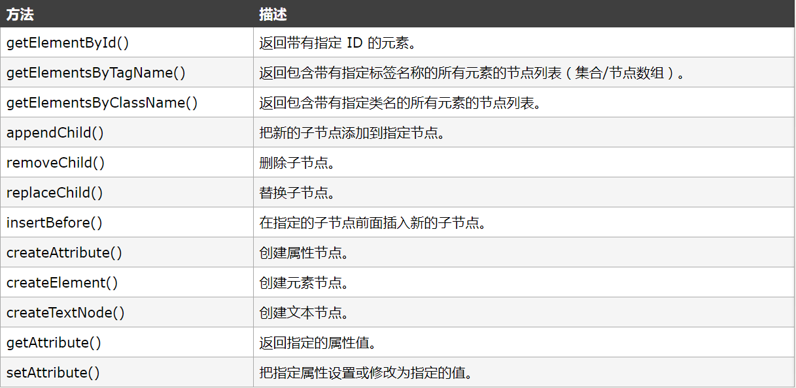
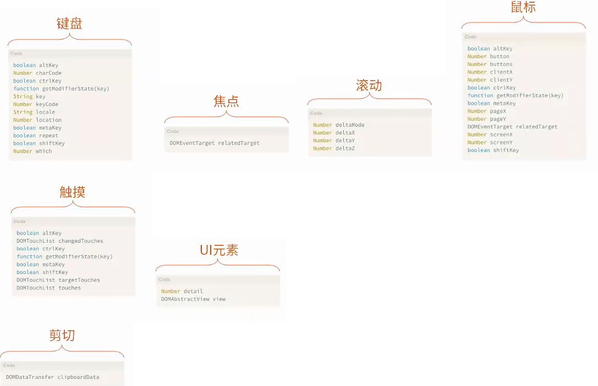
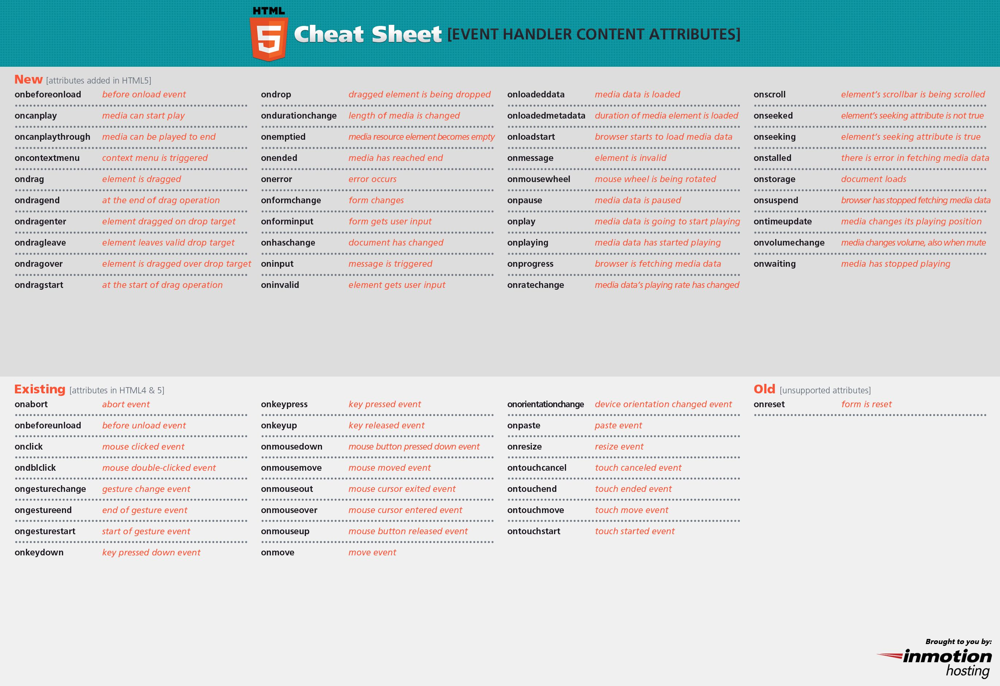
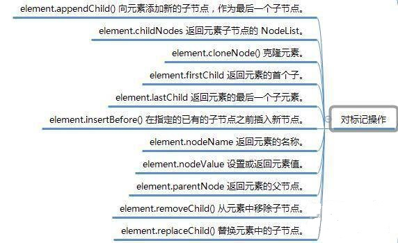
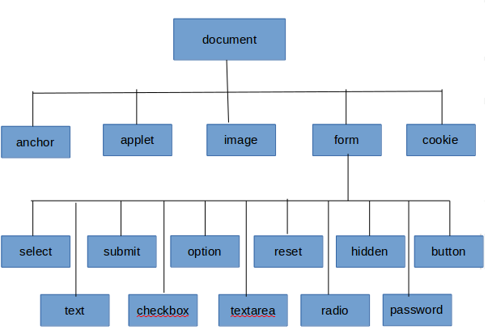
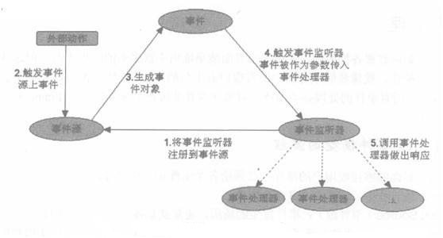
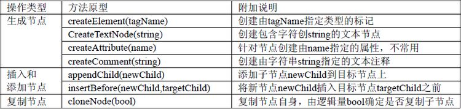

DOM--文档对象模型 是所有前段开发每天打交道的东西，但是随着jQuery等库的出现，大大简化了DOM操作，导致大家慢慢的“遗忘”了它的本来面貌。不过，要想深入学习前端知识，对DOM的了解是不可或缺的。DOM 定义了所有 HTML 元素的对象和属性，以及访问它们的方法（接口）。
举个例子：我们有一段HTML，那么如何访问第二层第一个节点呢，如何把最后一个节点移动到第一个节点上面去呢？DOM就是定义了如果做类似操作，那么应该怎么做的标准。比如用getElementById来访问节点，用insertBefore来插入节点。当浏览器载入HTML时，会生成相应的DOM树。
简而言之，DOM可以理解为一个访问或操作HTML各种标签的实现标准。对于一个HTML来说，文档节点Document（看不到的）是它的根节点，对应的对象便是docum。换句话说存在一个文档节点Document，然后它有子节点，比如通过document.getElementsByTagName("html")，得到类型为元素节点的Element html。当然还有很多访问节点的方式，如下图：

HTML DOM允许JavaScript对HTML事件作出反应。当事件发生时，可以执行 JavaScript，比如当用户点击一个 HTML 元素时。
主要分为: ①Window事件 ②Form事件 ③Keyboard事件 ④Mouse事件 ⑤Media事件 等等...
具体事件的属性有：▲Onblur--元素失去焦点时运行→→→Onfocus--元素获得焦点时运行 ▲Onclick--鼠标点击时触发→→→Ondblclick--鼠标双击时触发 ▲Onmousedown--按下鼠标按钮时触发→→→Onmousemove/Onmouseover--鼠标移动到元素上时触发→→→Onmouseseup--当元素上释放鼠标按钮时触发

DOM对象（No.1） 有很多种，上面的两个介绍中就略微带了点DOM对象的一些属性以及用法。
DOM对象总的可分为4大类：①DOM--Document ②DOM--Element ③DOM--Attribute ④DOM--Event 接下来介绍各自用的较多的一些
Doucment:
①--Document对象集合： all[]--提供对文档中所有 HTML 元素的访问。 anchors[]--返回对文档中所有 Anchor 对象的引用。 applets 返回对文档中所有 Applet 对象的引用。 forms[]--返回对文档中所有 Form 对象引用。 images[]--返回对文档中所有 Image 对象引用。 links[]--返回对文档中所有 Area 和 Link 对象引用。
②--Document对象属性： title--返回当前文档的标题。 URL--返回当前文档的 URL。
③--Document对象方法： getElementById()--返回对拥有指定 id 的第一个对象的引用。 getElementsByName()--返回带有指定名称的对象集合。 getElementsByTagName()--返回带有指定标签名的对象集合。
Element:
①--element.childNodes--返回元素子节点的 NodeList。 ②--element.cloneNode()--克隆元素。 ③--element.firstChild 返回元素的首个子。 ④--element.getAttribute()--返回元素节点的指定属性值。 ⑤--element.getAttributeNode()--返回指定的属性节点。 ⑥--element.getElementsByTagName()--返回拥有指定标签名的所有子元素的集合。


DOM对象（No.2）继上述的Dom.（No.1），接下来是另外两个对象
Event：
A：事件句柄(Event Handlers) ↓ ↓ ↓
onblur--onfocus（元素失去/获得焦点） onmouseover--onmouseout--onmouseup--onmousedown（鼠标移动到元素上/鼠标从元素上移开/鼠标按键松开/鼠标按钮按下） onclick--ondblclick（鼠标单击/双击） onkeypress--onkeyup（键盘按键被按下并松开/键盘按键松开） onsubmit--文本被选中
Attribute:
Attr 代表一个HTML属性。HTML属性总是属于HTML元素。还有NamedNodeMap对象。这里
①--attr.specified--如果属性被指定返回 true ，否则返回 false ②--attr.value--设置或者返回属性值 ③--nodemap.getNamedltem()--从节点列表中返回的指定属性节点。④--nodemap.item()--返回节点列表中处于指定索引号的节点。 ⑤--nodemap.removeNamedItem()--删除指定属性节点
